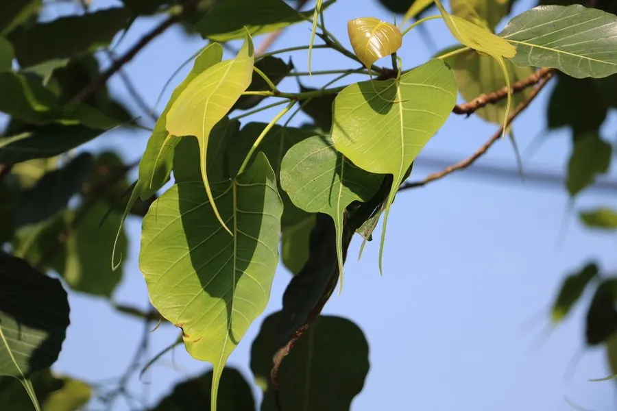

乔木 · 植物界
菩提树 Ficus religiosa

佛教圣树，叶片心形、先端具长尾状尖，相传释迦牟尼在此树下悟道，是热带地区常见的常绿大乔木。
- 分类
- 门被子植物门纲木兰纲目蔷薇目科桑科属榕属
- 栖息环境
- 海拔 800 米以下的热带亚热带地区，喜高温多湿与充足光照
- 地理分布
- 原产印度、尼泊尔至中国西南、华南，东南亚广泛分布
- 保护级别
- 暂无评估；中国未列入国家重点保护野生植物名录
物种志
菩提树为常绿大乔木，高可达 30 m，树皮灰白色、平滑；叶片互生，革质，三角状卵形，先端具长尾状尖，基部截形，叶脉明显，叶柄细长，风吹时叶片轻摇。花期 3–5 月，隐头花序生于叶腋，榕果扁球形，成熟时暗红色或紫色。菩提树的气生根不发达，在热带雨林中常以附生方式开始生长。
菩提树原产印度、尼泊尔至中国西南、华南及东南亚，喜高温多湿、光照充足，耐旱性较弱，适宜深厚肥沃的热带土壤。它是佛教中的圣树，相传释迦牟尼在菩提树下悟道，因此被广泛栽植于寺庙；叶片经脱肉处理后留下的网状叶脉可制成书签与工艺品。木材可制器具，树皮可提取栲胶，根与叶可入药。菩提树的叶片心形、尾尖细长，是佛教艺术中常见的图案元素。
形态与习性
- 株高可达 30 m，树皮灰白色
- 花期3–5 月，隐头花序生于叶腋
- 果期6–8 月，榕果扁球形
- 光照喜光，不耐长期荫蔽
- 水分喜湿润，不耐长期干旱
- 土壤深厚肥沃的热带壤土
- 主要用途寺庙圣树、叶脉书签工艺品、树皮提取栲胶
趣味知识
- 菩提树的叶片呈心形、先端有长长的尾尖，是佛教艺术中常见的图案。
- 相传释迦牟尼在菩提树下悟道，菩提树因此成为佛教圣树。
- 菩提树叶片去掉叶肉后留下网状叶脉，可制成书签等工艺品。
- 菩提树在热带雨林中常从其他树上附生开始生长，再逐渐独立成树。